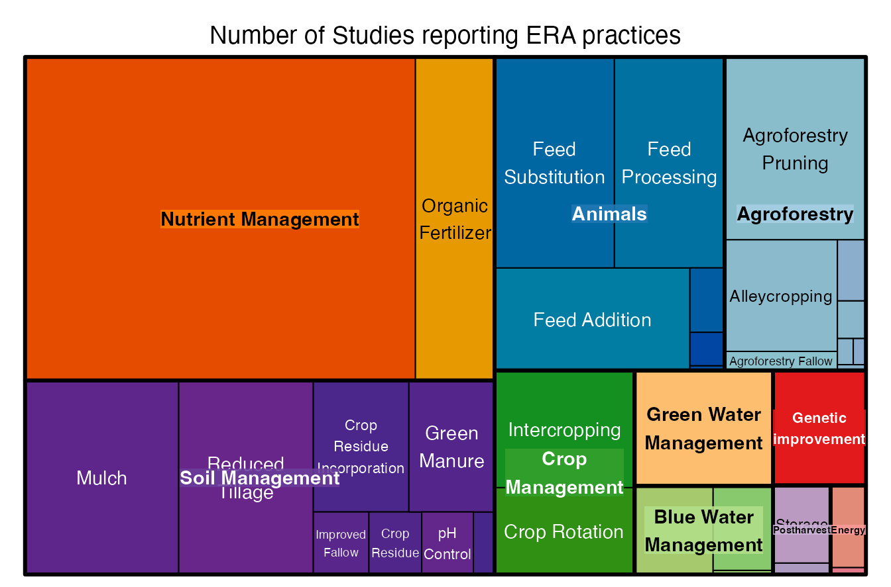

ERA-Explore-and-Analyze
Peter Steward
2025-04-02
ERA-Explore-and-Analyze.rmdExploring the data
In this vignette we will cover how to visualize ERA data and run simple meta-analysis.
Splitting combined practices
Observations in the main ERA.Compiled often consist of
bundles of practices which may relate to more than one product.
# No. combination practices
nrow(ERAg::ERA.Compiled[grepl("-",SubPrName)])
#> [1] 47113
# No. solo practices
nrow(ERAg::ERA.Compiled[!grepl("-",SubPrName)])
#> [1] 66173This makes visualization of the dataset difficult as there are over a
1000 sub-practice combinations creating too many values to map onto a
figure. We can use the ERAComboSplit function to “split”
these practice and product combinations into duplicate individual rows
each contain a unique combination of any practice x product combination
present in the original observation.
# There are many subpractice combinations in ERA
ERAg::ERA.Compiled[grepl("-",SubPrName),length(unique(SubPrName))]
#> [1] 1177
ERAg::ERA.Compiled[,unique(SubPrName)][1:10]
#> [1] "Inputs K-Inputs Micro-Inputs P-Inputs Urea"
#> [2] "Inputs K-Inputs P-Inputs Urea"
#> [3] "Inputs P-Inputs Urea"
#> [4] "Inputs Urea"
#> [5] "Inputs P"
#> [6] "Inputs K"
#> [7] "Inputs K-Inputs P"
#> [8] "Inputs K-Inputs Urea"
#> [9] "Inputs N-Inputs Urea"
#> [10] "Residue Unkn (nonNfix; NoFate)"
# Lets split these
ERA.Compiled.Split<-ERAComboSplit(Data=ERAg::ERA.Compiled)
# The dataset gets longer
dim(ERAg::ERA.Compiled)
#> [1] 113286 137
dim(ERA.Compiled.Split)
#> [1] 209953 143
# Suffixed .Combo columns contain split names and codes
grep(".Combo",colnames(ERA.Compiled.Split),value=T)
#> [1] "SubPrName.Combo" "PrName.Combo" "Theme.Combo"
#> [4] "Product.Simple.Combo" "Product.Subtype.Combo" "Product.Type.Combo"
# Combine codes have gone in the .Combo columns
ERA.Compiled.Split[grepl("-",SubPrName.Combo),length(unique(SubPrName.Combo))]
#> [1] 0
# Only single values are presnt
ERA.Compiled.Split[,unique(SubPrName.Combo)][1:10]
#> [1] "Inputs K" "Inputs Micro"
#> [3] "Inputs P" "Inputs Urea"
#> [5] "Inputs N" "Residue Unkn (nonNfix; NoFate)"
#> [7] "Irrigation Deficit" "Irrigation Supp"
#> [9] "Residue Incorp (nonNfix)" "Mulch (nonNfix)"Treemaps
We can use the “split” dataset to explore how many instance of
products, practices or outcomes there are. Treemaps are great way of
visualizing these data using the treemap::treemap()
function.
# First we count the number of studies per level of the practice heirarchy (see PracticeCodes object for more information on the practice heirarchy)
ERA.Compiled.Split.Pracs<-ERA.Compiled.Split[,list(N.Studies=length(unique(Code))),by=list(SubPrName.Combo,PrName.Combo,Theme.Combo)]
head(ERA.Compiled.Split.Pracs)
#> SubPrName.Combo PrName.Combo Theme.Combo
#> <char> <char> <char>
#> 1: Inputs K Inorganic Fertilizer Nutrient Management
#> 2: Inputs Micro Inorganic Fertilizer Nutrient Management
#> 3: Inputs P Inorganic Fertilizer Nutrient Management
#> 4: Inputs Urea Inorganic Fertilizer Nutrient Management
#> 5: Inputs N Inorganic Fertilizer Nutrient Management
#> 6: Residue Unkn (nonNfix; NoFate) Crop Residue Soil Management
#> N.Studies
#> <int>
#> 1: 264
#> 2: 80
#> 3: 498
#> 4: 277
#> 5: 406
#> 6: 21
# Visualize with the treemap function
treemap::treemap(ERA.Compiled.Split.Pracs,
index=c("Theme.Combo","PrName.Combo"),
vSize="N.Studies",
type="index",
palette = "Paired",
title="Number of Studies reporting ERA practices")
Analyzing Data
In this example we will analyze outcomes for the effectiveness of water harvesting practices using pits.
First let’s explore the ERA PracticeCodes to see where
we might find the names of the practices we are interested in. Theme is
the highest level of organization for practice which of these relate to
water harvesting?
PracticeCodes<-data.table(PracticeCodes)
PracticeCodes[,unique(Theme)]
#> [1] "Agroforestry" "Soil Management" "Blue Water Management"
#> [4] "Green Water Management" "Crop Management" "Genetic improvement"
#> [7] "Nutrient Management" "Energy" "Animals"
#> [10] "Postharvest" "Non-CSA" "Water Management"Water Management is a sensible place to look, let’s look
at the practices nesting within this theme.
PracticeCodes[Theme=="Water Management",unique(Practice)]
#> [1] "Irrigation" "Planting"The Water Harvesting practice is indeed in the
Water Management theme, there are also sub-practices nested
within practices so let’s see what these are for water harvesting.
# Note that we are using the Subpractice.S field, this is the field used to generate the names in the ERA.Compiled$SubPrName and ERA.Compiled$SubPrName.Base fields
PracticeCodes[Practice=="Water Harvesting",unique(Subpractice.S)]
#> [1] "Water Tanks" "Zai Pits" "Stone Rows"
#> [4] "Grass Strips" "Planting Basins" "Dam"
#> [7] "Terraces" "Bunds" "Ridge & Furrow"
#> [10] "Tied Ridges" "Microcatchments" "Fanya Juu or Chini"
#> [13] "Trench"Two of these practices seem to relate to pits
Planting Basins and Zai Pits, let’s check
their definitions to make sure.
FocalPractices<-c("Planting Basins","Zai Pits")
PracticeCodes[Subpractice %in% FocalPractices,Definition]
#> [1] "Small pits to capture water. Pits are filled with manure, compost or other nutrient sources before the rainy season. Crops are planted directly into the pits."
#> [2] "Small planting pits dug to capture water, crops are planted directly into the pits."Great both are are types of planting pit.
Data Availability
Now let’s see what data we have in ERA on these practices
(PitPracs<-ERAg::ERA.Compiled[grepl(paste(FocalPractices,collapse = "|"),SubPrName),SubPrName] %>%
table %>%
sort(decreasing = T))
#> .
#> MinTill-Planting Basins
#> 661
#> Planting Basins
#> 361
#> MinTill-Mulch (nonNfix)-Planting Basins
#> 107
#> AgFor Prune Mulch (Nfix)-MinTill-Planting Basins
#> 100
#> Mulch (nonNfix)-Planting Basins
#> 92
#> Zai Pits
#> 58
#> AgFor Prune Mulch (nonNfix)-MinTill-Planting Basins
#> 50
#> Planting Basins-Rotation (Mixed)
#> 34
#> MinTill-Mulch (Nfix)-Mulch (nonNfix)-Planting Basins
#> 28
#> Inputs Manure-Zai Pits
#> 27
#> Mulch (noID)-Planting Basins
#> 24
#> Mulch (noID)-Planting Basins-Rotation (Mixed)
#> 24
#> NoTill-Planting Basins
#> 21
#> Inputs K-Inputs N-Inputs P-Planting Basins
#> 20
#> AgFor Alley (Nfix)-AgFor Prune (Unknown)-Planting Basins
#> 16
#> Inputs K-Inputs Manure-Inputs N-Inputs P-MinTill-Mulch (noID)-Planting Basins
#> 12
#> Inputs Manure-MinTill-Mulch (noID)-Planting Basins
#> 12
#> Inputs Urea-Zai Pits
#> 10
#> Irrigation Supp-MinTill-Planting Basins
#> 10
#> Irrigation Supp-Planting Basins
#> 10
#> Intercrop (Mixed)-pH-Planting Basins
#> 8
#> Intercrop (Mixed)-Planting Basins
#> 8
#> Mulch (nonNfix)-Zai Pits
#> 8
#> Inputs Manure-Inputs Urea-Zai Pits
#> 6
#> MinTill-Planting Basins-Residue Incorp (noID)
#> 6
#> Green Manure (Nfix; Time)-MinTill-Planting Basins-Residue Unkn (NoID; NoFate)-Rotation (Mixed)
#> 3
#> Inputs K-Inputs Manure-Inputs N-Inputs P-MinTill-Planting Basins
#> 2
#> Inputs K-Inputs Manure-Inputs N-Inputs P-Planting Basins
#> 2
#> Inputs K-Inputs N-Inputs P-MinTill-Planting Basins
#> 2
#> Inputs K-Inputs N-MinTill-Planting Basins
#> 2
#> Inputs K-Inputs N-Planting Basins
#> 2
#> Inputs K-Inputs P-MinTill-Planting Basins
#> 2
#> Inputs K-Inputs P-Planting Basins
#> 2
#> Inputs Manure-MinTill-Planting Basins
#> 2
#> Inputs Manure-Planting Basins
#> 2
#> Inputs N-Inputs P-MinTill-Planting Basins
#> 2
#> Inputs N-Inputs P-Planting Basins
#> 2
#> MinTill-Mulch (nonNfix)-Planting Basins-Rotation (Mixed)
#> 2
#> MinTill-Zai Pits
#> 2
#> Inputs K-Inputs N-Inputs P-Inputs Urea-MinTill-Planting Basins
#> 1
#> Inputs Manure-Inputs P-Inputs Urea-MinTill-Zai Pits
#> 1
#> Intercrop (Mixed)-MinTill-Mulch (Nfix)-Mulch (nonNfix)-Planting Basins
#> 1Try using the treemap approach as a way of visualizing
the data above.
It seems planting basins are often used in combination with minimum tillage and mulch, together this is known as conservation agriculture. Let’s subset the data to where we have a reasonable number of observations, at least 50.
PitPracs<-PitPracs[PitPracs>=50] %>% names
ERA.Pits<-ERAg::ERA.Compiled[SubPrName %in% PitPracs] What outcomes do we have data for?
ERA.Pits.Out<-ERA.Pits[,list(N.Studies=length(unique(Code))),by=list(SubPrName,Out.SubInd)]
# Visualize with the treemap function
treemap::treemap(ERA.Pits.Out,
index=c("Out.SubInd"),
vSize="N.Studies",
type="index",
palette = "Paired",
title="Outcomes present for pit-based water harvesting practices")
What crops do we have data for?
ERA.Pits.Crops<-ERA.Pits[,list(N.Studies=length(unique(Code))),by=list(Product.Simple)]
# Visualize with the treemap function
treemap::treemap(ERA.Pits.Crops,
index=c("Product.Simple"),
vSize="N.Studies",
type="index",
palette = "Paired",
title="Crops present for pit-based water harvesting practices")
Where does this data come from?
ERAgON::ERAHexPlot(Data=ERA.Pits,Showpoints = "Yes",Point.Col = "black",Mid = "yellow",
High = "red",)
#> Warning in layer_sf(geom = GeomSf, data = data, mapping = mapping, stat = stat,
#> : Ignoring unknown aesthetics: x and y
#> Warning: `stat(log(count))` was deprecated in ggplot2 3.4.0.
#> ℹ Please use `after_stat(log(count))` instead.
#> ℹ The deprecated feature was likely used in the ERAgON package.
#> Please report the issue to the authors.
#> This warning is displayed once every 8 hours.
#> Call `lifecycle::last_lifecycle_warnings()` to see where this warning was
#> generated.
100*(ERA.Pits[,table(Country)] / nrow(ERA.Pits)) %>% round(digits=3)
#> Country
#> Ethiopia Mozambique Niger Sudan Zambia Zimbabwe
#> 3.0 0.3 3.0 3.5 0.6 89.6Where can I find the papers that contain this data?
ERA.Compiled provides you with some basic bibliographic
data, the most important of which is the DOI file which
enables you to locate the article on-line when adding the prefix
https://doi.org/ (e.g.,
https://doi.org/10.1007/s10705-005-6209-9).
ERA.Pits[,list(Code,Journal,Author,DOI)] %>% unique
#> Code Journal Author DOI
#> <char> <char> <char> <char>
#> 1: NN0035 NUTR CYCL AGROECOSYS Fatondji D 10.1007/s10705-005-6209-9
#> 2: NN0304 EXP AGR Mashingaidze N 10.1017/s0014479712001020
#> 3: HK0259 J SUSTAIN AGR Umar BB 10.1080/10440046.2012.661700
#> 4: HK0280 PHYS CHEM EARTH Mupangwa W 10.1016/j.pce.2007.07.030
#> 5: HK0281 PHYS CHEM EARTH Mupangwa W 10.1016/j.pce,2008.06.049
#> 6: HK0282 FIELD CROP RES Mupangwa W 10.1016/j.fcr.2012.02.020
#> 7: HK0283 J ARID ENVIRON Mupangwa W 10.1016/j.jaridenv.2012.11.007
#> 8: HK0347 CROP PROT Mutsamba EF 10.1016/j.cropro.2016.01.004
#> 9: DK0032 FIELD CROP RES Kafesu 10.1016/j.fcr.2018.01.014
#> 10: EO0021 S AFR J PLANT SOIL Mupangwa 10.1080/02571862.2018.1438673
#> 11: AG0044 AIMS AGR FOOD Mupangwa 10.3934/agrfood.2016.1.85
#> 12: NJ0060 J NEMATOL Mashavakure 10.21307/jofnem-2018-033
#> 13: AN0068 RENEW AGR FOOD SYST Thierfelder 10.1017/S1742170515000332
#> 14: AN0083 SOIL TILL RES Sime 10.1016/j.still.2014.12.001
#> 15: AN0093 LAND DEGRAD DEV Wildemeersch 10.1002/ldr.2416
#> 16: AN0123 OUTLOOK AGR Ali 10.1177/0030727016665034
#> 17: AN0128 BIOSCI J Ali 10.14393/BJ-v33n4a2017-33954
#> 18: NJ0096 NUTR CYCL AGROECOSYS Nyagumbo 10.1007/s10705-015-9733-2
#> 19: NJ0106 J SCI FOOD AGR Ali 10.1002/jsfa.7047
#> 20: JS0245 EXP AGR Amede 10.1017/s0014479710000803
#> 21: AG0053 INT J AGR SUSTAIN Mupangwa 10.1080/14735903.2015.1011393
#> 22: EO0020 RENEW AGR FOOD SYST Mupangwa 10.1017/s1742170516000041
#> Code Journal Author DOIThere is also a DataLoc field in
ERA.Compiled that shows where data were extracted from
within in a publication,
ERA.Pits[1:5,list(DOI,PrName,Out.SubInd,MeanT,MeanC,Units,DataLoc)]
#> DOI PrName Out.SubInd MeanT MeanC Units
#> <char> <char> <char> <num> <num> <char>
#> 1: 10.1007/s10705-005-6209-9 Water Harvesting Crop Yield 0.03175 0.02350 Mg/ha
#> 2: 10.1007/s10705-005-6209-9 Water Harvesting Crop Yield 0.18332 0.14246 Mg/ha
#> 3: 10.1007/s10705-005-6209-9 Water Harvesting Crop Yield 1.17388 0.71884 Mg/ha
#> 4: 10.1007/s10705-005-6209-9 Water Harvesting Crop Yield 0.42047 0.10704 Mg/ha
#> 5: 10.1007/s10705-005-6209-9 Water Harvesting Crop Yield 0.37579 0.26944 Mg/ha
#> DataLoc
#> <char>
#> 1: Fig 3a
#> 2: Fig 3a
#> 3: Fig 3a
#> 4: Fig 3b
#> 5: Fig 3bPrepare the Data
There are some pre-processing steps that we need to apply to the data
using the ERAg::PrepareERA function before conducting a
meta-analysis based on response ratios. These steps include:
1) Negative outcomes: where outcomes have a notable number
(e.g. > 0.5%) of negative values for the control (MeanC
column) or experimental treatment (MeanT column), this is
because negative numbers are incompatible with ratios.
2) Inverse outcomes: when a lower value indicates a better
outcome, the outcome values for control (MeanC) and
experimental treatment (MeanT) are swapped (excluding
economic outcomes).
See ?PrepareERA for more details
ERA.Pits.Prep<-ERAg::PrepareERA(Data = ERA.Pits,Perc.Neg = 0.5,RmNeg = T)
# Have we lost any data?
dim(ERA.Pits)
#> [1] 1429 137
dim(ERA.Pits.Prep)
#> [1] 1429 137We haven’t lost any data which means that there were insufficient negative outcomes to cause us an issue.
Analysis
Key Information
To analyze the data we will use the ERAg::ERAAnalyze
function which performs the following:
Weighting: Within-study variance measures for mean outcomes are infrequently reported in agricultural literature, so traditional meta-analysis approaches cannot be applied to most ERA outcomes. Therefore individual observations are up-weighted by replication and down-weighted by the number of observations submitted from the same study (Codecolumn) for each combination of grouping variables. Studies with more replications are likely to produce less variable information than studies with fewer. Controlling for the number of observations contributed by a study to the dataset weights each study equally. As such, outcome ratios are weighted according to:Weighting = ((RepsE * RepsC)/(RepsE)+(RepsC))/(Ns)whereRepis the number of replications forRepCthe control andRepEthe experimental treatment, andNsis the total number of observations contributed to the overall dataset by the study to which the observation belongs.Outlier Removal: Outliers are defined using an extreme outliers method where response ratios above or below (interquartile range) are removed. The ERA outcome variables analyzed by this function are ratios between am experimental treatment and control outcome and should be approximately normally distributed. When the control approaches zero (e.g. yield collapse) this skews the distribution of the outcome ratio producing extremely high values tending to infinity and requiring outlier removal. The use of outcome ratios, whilst necessary to standardize outcomes between studies, means this approach is inappropriate to study nil outcomes (e.g. total crop yield failure), a binomial approach would be better for such instances. Outlier removal is optional and enabled if the rmOut parameter is set to TRUE (default).Test of Normality: A Shapiro-Wilk test is applied to raw and log-transformed outcome ratios for each combination of grouping variables. This can be used to judge whether values based on mean proportional change, mean response ratio or median proportional change should be used to evaluate practice performance.Basic Statistical Tests: WhenFast = FALSEwhere minimum data requirements are met linear-mixed effects or linear model is applied to the data to generate means, standard errors and variance. Linear mixed effects models uselmer::lme4where outcomes from a grouping variable combination are from at least three sites of which two must have at least three observations. The model is weighted and includes a random intercept for site (lmer(Value~1 + (1|Site),weights=Weights)). If the minimum data requirements for the linear-mixed effects are not met but there are at least 5 outcome observations for the grouping variable combination then a weighted linear model is used (lm(Value~1,weights=Weights)) . If the minimum data requirements for the linear model are not met no test is applied to the outcome values.Correction of Jensen Inequality: The log-scale response ratios are back-transformed and converted to % change with and without a correction for the Jensen inequality. The correction applied is as per Tandini & Mehrabi 2017. We recommend using the corrected values.
In all case we advise caution in the interpretation of analysis
outputs. The distribution of the data for each combination of values
specified in the Aggregate.By field should be checked
through plotting. Combinations with limited data are vulnerable to
outliers and should be scrutinized carefully.
Calculate Effect Sizes
Ok now that we have an idea what the function is doing let’s run an
analysis of outcomes subindicator (Out.SubInd) by
subpractice (SubPrName) using the
ERAg::ERAAnalyze function.
We will not specify a product (i.e. crop) column in the
Aggregate.By argument so results are averaged across all
the crops present within each combination of subindicator x subpractice
as specified by c("Out.SubInd","SubPrName") in the
Aggregate.By argument.
Analysis1<-ERAg::ERAAnalyze(Data=ERA.Pits.Prep,
# rmOut: Outliers will be removed
rmOut = TRUE,
# Aggregate.By: Data are analyzed as subsets of these fields
Aggregate.By = c("Out.SubInd","SubPrName"),
# Fast: Tests will be applied to the data if FALSE
Fast=FALSE)
#> boundary (singular) fit: see help('isSingular')
#> boundary (singular) fit: see help('isSingular')Explore Results
Subset By Minimum Data Requirements
ERAAnalyze outputs a data.table with many columns, we
will run through what many of these are next, but you can also see the
function description for more information
(?ERAg::ERAAnalyze).
colnames(Analysis1)
#> [1] "Out.SubInd" "SubPrName" "Observations" "Studies"
#> [5] "Sites" "RR.Shapiro.Sig" "RR" "RR.median"
#> [9] "RR.var" "RR.se" "RR.CIlow" "RR.CIhigh"
#> [13] "RR.Quantiles0.25" "PC.Shapiro.Sig" "PC" "PC.median"
#> [17] "PC.se" "PC.CIlow" "PC.CIhigh" "PC.var"
#> [21] "PC.Quantiles0.25" "Units" "Model" "MeanT.Obs"
#> [25] "MeanT" "MeanT.se" "MeanC.Obs" "MeanC"
#> [29] "MeanC.se" "RR.t value" "RR.Pr(>|t|)" "RR.Sigma2"
#> [33] "PC.t value" "PC.Pr(>|t|)" "PC.Sigma2" "RR.pc.se.low"
#> [37] "RR.pc" "RR.pc.se.high" "RR.pc.jen.low" "RR.pc.jen"
#> [41] "RR.pc.jen.high" "RR.pc.jen.CIlow" "RR.pc.jen.CIhigh" "PC.pc.se.low"
#> [45] "PC.pc" "PC.pc.se.high"The first 5 columns describe the subset of data analyzed
(combinations of the fields provided in the Aggregate.By
argument) and the amount of data that were available.
Analysis1[,list(Out.SubInd, SubPrName, Observations, Studies, Sites)] %>% head
#> Out.SubInd SubPrName Observations Studies Sites
#> <char> <char> <int> <int> <int>
#> 1: Crop Yield Zai Pits 28 3 4
#> 2: Crop Residue Yield Zai Pits 12 1 2
#> 3: Water Use Efficiency Zai Pits 11 2 3
#> 4: Crop Yield Planting Basins 119 9 10
#> 5: Nitrogen Agronomic Efficiency Planting Basins 4 1 1
#> 6: Water Use Efficiency Planting Basins 9 1 1We can use the data availability fields to filter the results to combinations that meet a minimum data requirement, let’s specify a minimum of 3 studies.
Analysis1<-Analysis1[Studies>=3]
Analysis1[,list(Out.SubInd, SubPrName, Observations, Studies, Sites)]
#> Out.SubInd SubPrName Observations
#> <char> <char> <int>
#> 1: Crop Yield Zai Pits 28
#> 2: Crop Yield Planting Basins 119
#> 3: Crop Yield MinTill-Planting Basins 31
#> 4: Soil Moisture Planting Basins 78
#> 5: Infiltration Rate Planting Basins 11
#> 6: Crop Yield MinTill-Mulch (nonNfix)-Planting Basins 51
#> 7: Soil Moisture MinTill-Planting Basins 588
#> Studies Sites
#> <int> <int>
#> 1: 3 4
#> 2: 9 10
#> 3: 5 5
#> 4: 6 7
#> 5: 3 3
#> 6: 4 7
#> 7: 3 5Response Ratios
A response ratio (RR) is simply the natural log of the ratio of the experimental outcome to the control outcome. If maize yields with planting basins are 1.5 Mg/ha and without them are 1.1 Mg/ha the response ratio is log(1.5/1.1) = 0.310. RRs greater than zero indicate the experimental treatment is better than the control and vice-versa for RRs less than zero.
Measures of central tendency and error for RRs are provided in the
fields prefixed with RR. and include mean
(RR), median, variance, standard error and quantiles at 25%
intervals. If a test was applied to the data then the mean and standard
error are derived from that test.
A Shapiro-Wilks test of normality is applied to RRs. If a value in
the RR.Shapiro.Sig field is <0.05 then the data for that
row are statistically non-normal therefore estimates of central tendency
and tests results may be unreliable.
Analysis1[,list(Out.SubInd,SubPrName,RR.Shapiro.Sig, RR, RR.median, RR.var, RR.se, RR.Quantiles0.25)] %>% head
#> Out.SubInd SubPrName RR.Shapiro.Sig
#> <char> <char> <num>
#> 1: Crop Yield Zai Pits 0.02136
#> 2: Crop Yield Planting Basins 0.01802
#> 3: Crop Yield MinTill-Planting Basins 0.34706
#> 4: Soil Moisture Planting Basins 0.00643
#> 5: Infiltration Rate Planting Basins 0.53826
#> 6: Crop Yield MinTill-Mulch (nonNfix)-Planting Basins 0.00001
#> RR RR.median RR.var RR.se
#> <num> <num> <num> <num>
#> 1: 1.60856 1.56759080 1.93062 0.41504
#> 2: 0.34048 0.28430648 0.18272 0.08592
#> 3: 0.35755 0.95097629 0.05203 0.16766
#> 4: 0.13466 0.18669793 0.05141 0.05812
#> 5: 0.04268 -0.09502693 0.06270 0.07082
#> 6: 0.32865 0.15415068 0.18962 0.17219
#> RR.Quantiles0.25
#> <char>
#> 1: 0.17618|0.6611|1.50677|2.05494|4.89784
#> 2: -1.28606|0.10469|0.28327|0.66602|1.4929
#> 3: -0.34971|0.78828|0.84251|0.89675|0.95098
#> 4: -0.39531|0.02917|0.17919|0.35003|0.64185
#> 5: -0.17829|-0.12999|-0.09863|0.16834|0.53714
#> 6: -0.50858|-0.01417|0.1463|0.30769|2.93563If tests were performed (argument Fast=F) then test
results presented in the t value, Pr(>|t|)
and Sigma2. The Pr(>|t|) field indicates
significance.
Analysis1[,list(Out.SubInd,SubPrName,Model, `RR`,`RR.se`,`RR.t value`, `RR.Pr(>|t|)`, RR.Sigma2)] %>% head
#> Out.SubInd SubPrName Model
#> <char> <char> <char>
#> 1: Crop Yield Zai Pits lmerModLmerTest
#> 2: Crop Yield Planting Basins lmerModLmerTest
#> 3: Crop Yield MinTill-Planting Basins lmerModLmerTest
#> 4: Soil Moisture Planting Basins lmerModLmerTest
#> 5: Infiltration Rate Planting Basins lm
#> 6: Crop Yield MinTill-Mulch (nonNfix)-Planting Basins lmerModLmerTest
#> RR RR.se RR.t value RR.Pr(>|t|) RR.Sigma2
#> <num> <num> <num> <num> <num>
#> 1: 1.60856 0.41504 3.87563 0.03317 0.25526
#> 2: 0.34048 0.08592 3.96281 0.00343 0.02497
#> 3: 0.35755 0.16766 2.13255 0.09646 0.00706
#> 4: 0.13466 0.05812 2.31702 0.05524 0.00260
#> 5: 0.04268 0.07082 0.60264 0.56017 0.02508
#> 6: 0.32865 0.17219 1.90870 0.11167 0.01603For easier interpretation mean RR and RR +/- standard error are
back-transformed and converted into percentage change (e.g., a ratio of
1.1 = a 10% increase). The RR.pc. columns back-transform
log ratios using the exponent. The RR.pc.jen. columns
back-transform log ratios using the exponent with a correction for the
Jensen inequality.
Analysis1[,list(Out.SubInd,SubPrName, RR.pc.se.low, RR.pc, RR.pc.se.high, RR.pc.jen.low, RR.pc.jen.high)] %>% head
#> Out.SubInd SubPrName RR.pc.se.low
#> <char> <char> <num>
#> 1: Crop Yield Zai Pits 229.86721
#> 2: Crop Yield Planting Basins 28.98939
#> 3: Crop Yield MinTill-Planting Basins 20.91166
#> 4: Soil Moisture Planting Basins 7.95454
#> 5: Infiltration Rate Planting Basins -2.77478
#> 6: Crop Yield MinTill-Mulch (nonNfix)-Planting Basins 16.93640
#> RR.pc RR.pc.se.high RR.pc.jen.low RR.pc.jen.high
#> <num> <num> <num> <num>
#> 1: 399.56124 656.55118 274.77288 759.54243
#> 2: 40.56221 53.17333 30.60992 55.09769
#> 3: 42.98221 69.08139 21.33923 69.67930
#> 4: 14.41477 21.26160 8.09497 21.41934
#> 5: 4.36039 12.01919 -1.54790 13.43275
#> 6: 38.90916 65.01068 17.87741 66.33855Proportional change
Analyses are performed on the “raw” ratio of experimental to control
outcomes, these columns are prefixed PC.. The proportional
change columns are as per the response ratio columns, but there are no
.jen. columns as values are not logged.
We urge caution in using statistics based on proportional data due to the imbalanced scaling of ratios below or above one. Ratio or proportion data is often right skewed as values cannot be lower than zero but can tend to infinity.
Investigate distributions
Below we compare percent changes estimates using the ratio vs. response ratio.
The different statistics/methods give different effect size estimates and have different amounts of data availability. Generally the more data that are available the closer the convergence of the methods, although not always.
# Add percentage change results based on median
Analysis1[,PC.pc.median:=100*(PC.median-1)]
Analysis1[,RR.pc.median:=100*(RR.median-1)]
Analysis1[,list(Out.SubInd,SubPrName,Observations,RR.pc.jen,RR.pc.median,PC.pc,PC.pc.median)]
#> Out.SubInd SubPrName Observations
#> <char> <char> <int>
#> 1: Crop Yield Zai Pits 28
#> 2: Crop Yield Planting Basins 119
#> 3: Crop Yield MinTill-Planting Basins 31
#> 4: Soil Moisture Planting Basins 78
#> 5: Infiltration Rate Planting Basins 11
#> 6: Crop Yield MinTill-Mulch (nonNfix)-Planting Basins 51
#> 7: Soil Moisture MinTill-Planting Basins 588
#> RR.pc.jen RR.pc.median PC.pc PC.pc.median
#> <num> <num> <num> <num>
#> 1: 467.56778 56.759080 1523.465 379.508197
#> 2: 42.32813 -71.569352 52.000 32.884013
#> 3: 43.48782 -4.902371 53.348 158.823529
#> 4: 14.56361 -81.330207 16.424 20.526316
#> 5: 5.67731 -109.502693 7.208 -9.065156
#> 6: 40.02699 -84.584932 84.019 16.666667
#> 7: 13.29785 -83.794414 14.169 17.592593A check of the normality of the data reveals potential issues and these are only “solved” (according to the significance of the Shapiro-Wilks test) by logging the data in one instance (Soil Moisture and MinTill-Planting Basins).
Analysis1[,list(Out.SubInd,SubPrName, RR.Shapiro.Sig, PC.Shapiro.Sig)]
#> Out.SubInd SubPrName RR.Shapiro.Sig
#> <char> <char> <num>
#> 1: Crop Yield Zai Pits 0.02136
#> 2: Crop Yield Planting Basins 0.01802
#> 3: Crop Yield MinTill-Planting Basins 0.34706
#> 4: Soil Moisture Planting Basins 0.00643
#> 5: Infiltration Rate Planting Basins 0.53826
#> 6: Crop Yield MinTill-Mulch (nonNfix)-Planting Basins 0.00001
#> 7: Soil Moisture MinTill-Planting Basins 0.00000
#> PC.Shapiro.Sig
#> <num>
#> 1: 0.00000
#> 2: 0.00000
#> 3: 0.00395
#> 4: 0.00002
#> 5: 0.32726
#> 6: 0.00000
#> 7: 0.00000Let’s check the data distribution. If we take the combination of
Soil Moisture and MinTill-Planting Basins
plotting the outcome response ratio and ratio vs a normal curve it
shows: 1) the right skew (due to the nature of ratio data) in the ratio
data is corrected by the natural log transformation; 2) whilst the
response ratio distribution is not quite normal, it’s not terrible
either and probably good enough for our purposes.
RR<-ERA.Pits.Prep[Out.SubInd=="Soil Moisture" & SubPrName=="MinTill-Planting Basins",yi]
hist(RR, prob=T)
curve(dnorm(x, mean=mean(RR), sd=sqrt(var(RR))), col="darkblue", lwd=2, add=TRUE, yaxt="n")
Proportion<-ERA.Pits.Prep[Out.SubInd=="Soil Moisture" & SubPrName=="MinTill-Planting Basins",MeanT/MeanC]
hist(Proportion, prob=T)
curve(dnorm(x, mean=mean(Proportion), sd=sqrt(var(Proportion))), col="darkblue", lwd=2, add=TRUE, yaxt="n")
Example of issue with ordering of numerator and denominator
Interestingly results can change if the numerator and denominator are swapped. For example:
Con<-c(1000,1500,2000) # Control outcomes
Exp<-c(1100,500,1200) # Experimental outcomes
# ***Experimental outcome is numerator***
Exp/Con
#> [1] 1.1000000 0.3333333 0.6000000
mean(Exp/Con)
#> [1] 0.6777778
# % change estimated from mean of ratios
100*(mean(Exp/Con)-1)
#> [1] -32.22222
# % change estimated from mean of response ratios
100*(exp(mean(log(Exp/Con)))-1)
#> [1] -39.63189
# ***Control outcome is numerator***
Con/Exp
#> [1] 0.9090909 3.0000000 1.6666667
mean(Con/Exp)
#> [1] 1.858586
# % change estimated from mean of ratios
100*(mean(Con/Exp)-1)
#> [1] 85.85859
# % change estimated from mean of response ratios
100*(exp(mean(log(Con/Exp)))-1)
#> [1] 65.65038When averaging ratios if the experimental treatment is the numerator then the experimental treatment yields -32.2% less than the control, and if the control treatment is the numerator then we find the control yields 85.9% more than the experimental treatment. The results using response ratios are less dispersed (-39.6% vs 65.7%).
Which is true: 1) the control is 65.7% better than the experimental treatment or 2) the experimental treatment is 39.6% worse than the control?